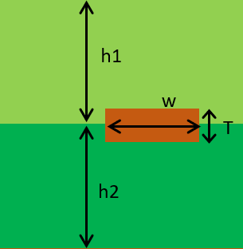

Stripline Impedance Calculator
Back to Main Page
Calculate Stripline Impedance
Stripline Diagram

Enter the following parameters to calculate the stripline impedance:
Width (mm):
Thickness (µm):
Height 1 (mm):
Height 2 (mm):
Relative Permittivity (Er):
Calculate Impedance
Impedance (Ω):